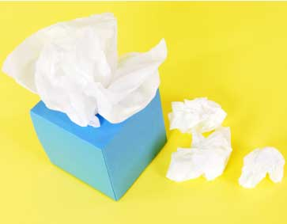

As winter approaches each year we brace for flu season. This year brings an extra complication: the H1N1 virus, also known as swine flu. In June, the World Health Organization declared H1N1 a pandemic. Since then, the media has brimmed with H1N1 stories, governments have stockpiled Tamiflu, flu vaccines have been developed, temperature sensors have been installed in Asian airports, and gallons of hand sanitizer have been dispensed.
While the concerns are justified, we have always been vulnerable to various forms of the flu (influenza) virus. Flu viruses continually undergo genetic modification, presenting our immune systems with new challenges each season. To help you make sense of what’s in the news and plan your own best course of action, here’s a quick look at what you need to know about H1N1 and seasonal flu, and how to stay healthy.
Big changes can happen when influenza viruses jump species. Birds, humans and pigs each have their own viruses that circulate among their populations. Pigs, however, can become infected with avian, swine and human viruses. Viruses can trade genes, potentially creating a novel virus capable of infecting humans, such as H1N1. Some authorities have tied industrial-scale hog farms - where animals are crowded together - with the origin and spread of the H1N1 virus.
Influenza viruses are very contagious. Sneezes and coughs propel the viral droplets into the air, and an infected person begins shedding viruses a day before symptoms strike, thus thwarting quarantines from being a completely effective tactic. These viruses can survive on inanimate objects for two to eight hours. You touch that object (a borrowed pen, a shopping cart), then rub your eye, nose or lips - and presto, inoculation.
One to three days after exposure, flu symptoms develop: fatigue, fever, body aches, headache, sore throat, cough, and even vomiting or diarrhea. Children may also develop middle ear infections. People with respiratory ailments, such as asthma and chronic obstructive pulmonary disease, are especially vulnerable to complications such as pneumonia.
Whereas the seasonal flu or influenza viruses take a greater toll on the very young and the very old, the H1N1 virus (swine flu) has so far proved most dangerous to children and young adults. So far, most of the deaths have been of people with other significant health problems, and the vast majority of the million or so H1N1 flu cases have been mild, on par with seasonal influenza.
The vaccine for this season’s expected influenza viruses, though recommended to protect against these viruses, doesn’t work against the H1N1 virus. The Centers for Disease Control (CDC) anticipates a vaccine against the novel H1N1 will be available this fall. The CDC’s Advisory Committee on Immunization Practices has prioritized the H1N1 vaccine for groups at higher risk of complications: people who work in the health care industry, live with or care for babies younger than 6 months old, are pregnant, are between the age of 6 months to 24 years old, or are 25 through 64 years old with chronic illnesses or immune dysfunction.
Basic hygiene measures can prevent the flu’s spread.
Healthy lifestyle choices can keep your immune system in fighting shape. Sleep deprivation, stress, smoking, malnutrition and alcohol excess all undermine immunity. Conversely, a healthy diet, adequate sleep, regular exercise and relaxation improve immune health.
Some herbs have antiviral activity, including against some influenza strains. The list includes ginger, licorice and garlic (use it raw in food). Two small studies have shown that a proprietary elderberry syrup (Sambucol) shortens the duration and severity of influenza.
Immune-enhancing herbs such as ginseng and eleuthero (Siberian ginseng) have been shown to help prevent viral respiratory infections, including the flu. One study found that giving ginseng a few days before the flu vaccine boosted the subsequent immune response. The Chinese herb astragalus also acts as an immune tonic. Taken in adequate dosages, echinacea and andrographis have both been shown to curtail upper respiratory infections. Whether any of these herbs can help counter H1N1 flu is unknown.
Vitamin D plays a role in many bodily processes, including immune function. Some scientists have pointed to a correlation between wintertime troughs in vitamin D intake and respiratory viral infections. New research published this year in the Archives of Internal Medicine linked low blood levels of vitamin D with a heightened risk of upper respiratory infections, particularly among people with chronic lung conditions. No studies have yet determined whether supplementing with vitamin D can prevent the common cold, much less influenza. Because few foods provide vitamin D, many experts recommend supplementation with at least 1,000 IU a day of vitamin D - several times the current guidelines for 200 to 600 IU.
The antiviral medications Tamiflu (oseltamivir), which is derived from Chinese star anise, and Relenza (zanamivir) may make flu symptoms milder. Most experts recommend these medications be reserved to prevent disease in people at high risk for complications (in the face of suspected exposure) and to treat people who develop severe flu symptoms. (Overuse of these medications can lead to viruses becoming resistant to their effects.)
Anyone under the age of 18 should avoid aspirin, which, when taken during a viral illness, can lead to a serious condition called Reye’s syndrome, a rare disease characterized by neurological disorders, brain swelling and enlargement of the liver.
When to Get Medical Treatment for the Flu
Seek medical attention if you develop signs of severe illness: shortness of breath or difficulty breathing, chest or abdominal pain, dizziness, confusion, or severe vomiting. Signs that a child needs immediate care include rapid breathing, poor fluid intake, extreme irritability and lethargy (the child is difficult to wake and won’t interact).
Flu Information References and Additional Information
For more information about seasonal and H1N1 flu, see the CDC's flu information page.
Abascal, Kathy. Herbs & Influenza: How herbs used in the 1918 flu pandemic can be effective today. Tigana Press, 2006.
|
 ISTOCKPHOTO Coughing into a tissue or into your elbow can help prevent the spread of flu viruses. |
|
|